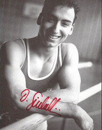

Daniel Giubellini (SUI)
1990 European PB Champion

Medal Total
European Championships: 1 Gold
Daniel was born on August 19, 1969.
Competition Results
1988
Gander Memorial: 10th AA
SUI Championships: 4th AA
1989
DTB Cup: 22nd AA
Gander Memorial: 7th AA
SUI-ESP Dual Meet: 2nd AA
World Championships: 26th Team
1990
European Championships: 9th AA, 1st PB
GDR-SUI Dual Meet: 2nd Team, 2nd AA
Moscow News International: 14th AA, 8th FX, 9th PB
1991
American Cup: 8th AA
DTB Cup: 10th AA, 4th PH, 6th FX
GER-SUI Dual Meet: 2nd Team, 3rd AA
Intl. Mixed Pairs: 7th Team
Swiss Cup Mixed Pairs: 10th Team
World Championships: 11th Team, 25th AA
1992
GER-SUI-ROM: 13th AA
Olympic Games: 11th Team, 54th AA (prelims)
1993
GER-SUI Dual Meet: 2nd Team
World Championships: 21st AA
This page was created on November
05, 2005.
© Gymn Forum